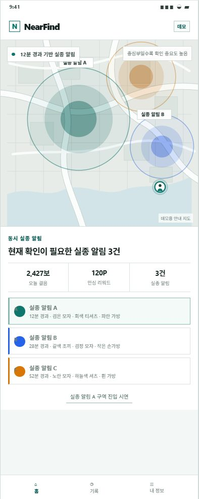
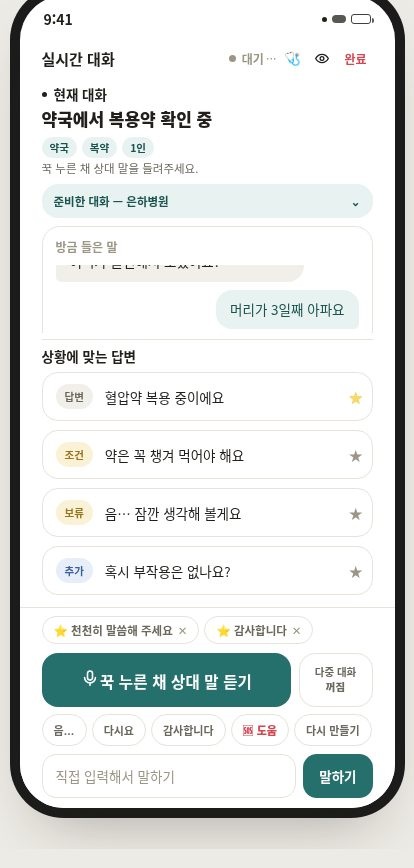
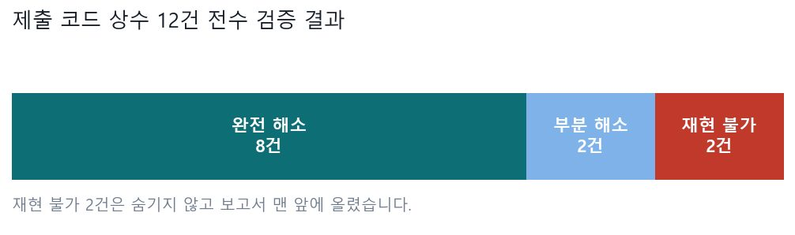
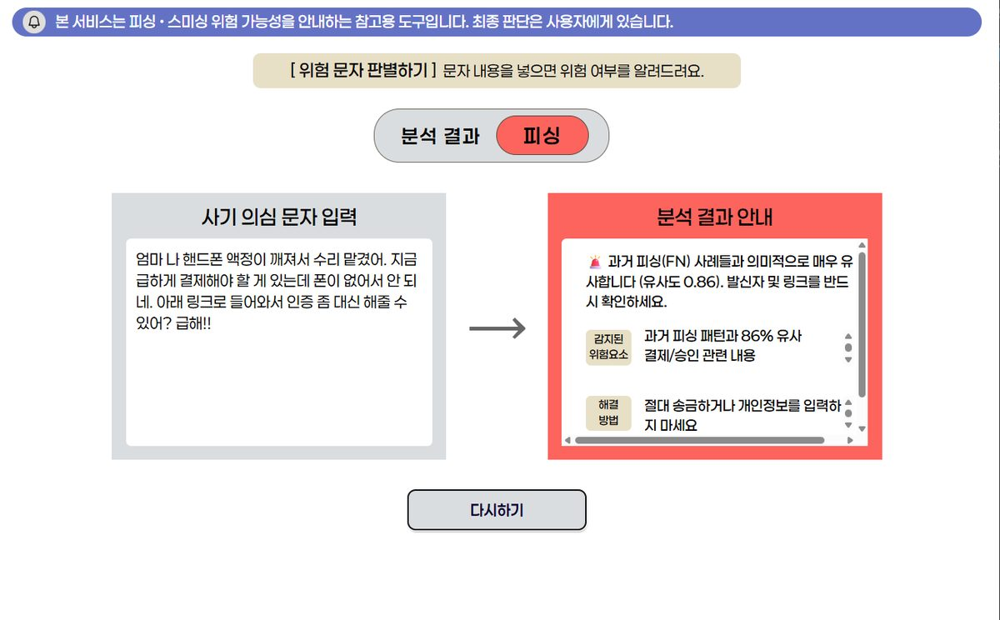
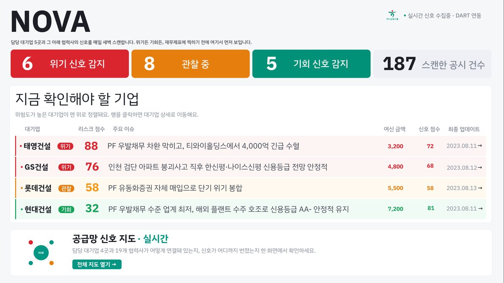
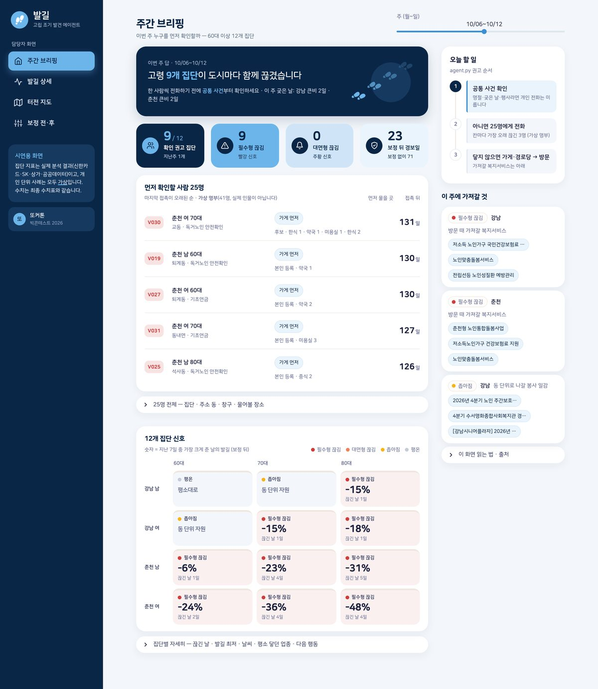
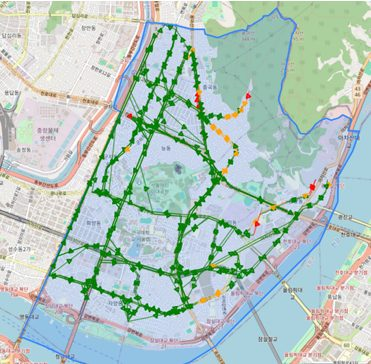
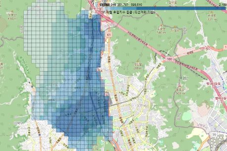
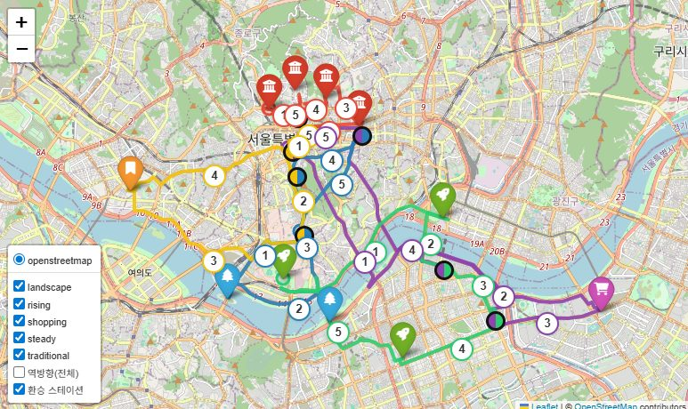
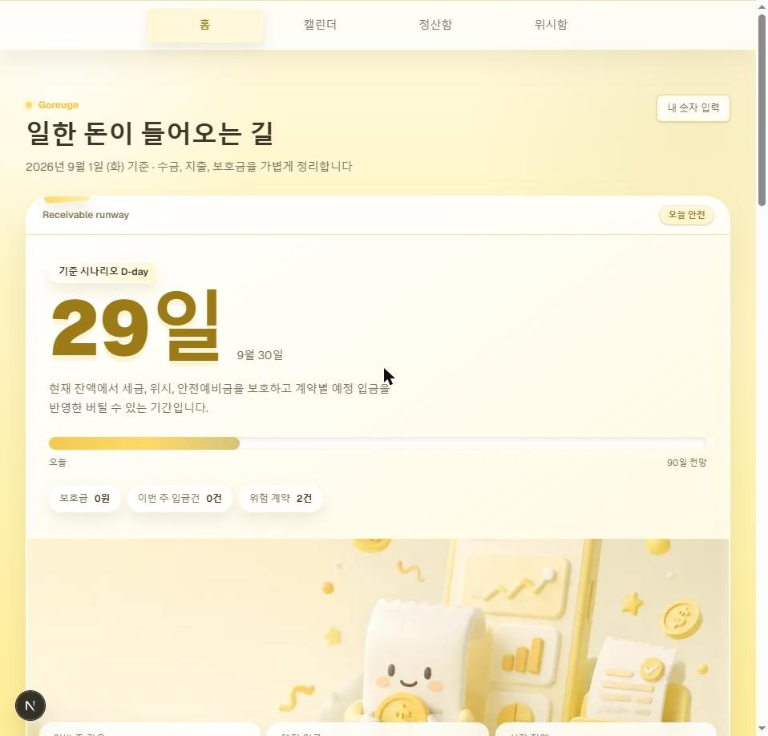

Projects
프로젝트
각 페이지에 배경 · 데이터 · 접근 · 기술 판단 · 막혔던 지점 · 한계 · 직무와의 연결을 남겼습니다. 잘된 것뿐 아니라 인정하는 한계도 적었습니다.
LLM · 에이전트 시스템
모델을 실제로 돌아가는 구조로 만들고, 그 판단의 근거를 추적할 수 있게 만든 프로젝트입니다.

2026.03 – 현재대표FHTC — 판정의 근거를 끝까지 추적하는 학습 진단 에이전트
초등학생이 수학 문제를 푸는 과정을 시선으로 관측하고, 거기서 내린 판정의 근거를 코드가 끝까지 되재는 멀티 에이전트 시스템
9번 문항당 Claude 판정 1회
2026.08 – 2026.09공시 Agent · Dartrio
DART 전자공시 원문을 근거로 인용하며 답하는 재무공시 RAG 에이전트
4,204 공시 원문

2026.08NearFind — 실종 시민 제보망
실종 안내 문자를 인상착의 이미지로 바꾸고, 마지막 확인 장소 근처 시민에게만 알려 신고로 잇는 MVP
3초 인상착의 카드 인지 목표

2026.07개화 — 말이 어려운 사람의 다음 한 마디를 만드는 AAC
상대의 말을 듣고 지금 할 수 있는 답 네 개를 만들어, 손가락 한 번으로 대신 말해 주는 발화보조 앱
28% → 0% 사용자 정보와 모순되는 답변(거…
모델 검증 · 신뢰성
만든 것을 의심하고 반증한 기록입니다. 모델 리스크 관리와 같은 종류의 작업입니다.

2026.08 – 2026.09LG Aimers · 학습코드 재현 검증
제구 성공 확률 예측 모델과, 제출 코드의 상수 12건을 학습 데이터만으로 전수 재현한 검증 보고서
1,475,092 학습 행 수
2026.09LLM-as-a-Judge — 논문 세미나와 프로젝트 적용
"GPT-4에게 채점을 맡겨도 되는가"를 다룬 논문을 읽고, 그 검증 절차를 졸업 프로젝트의 판정 검증 설계로 옮긴 발표
65% GPT-4의 위치 편향 일관성

2025.11피싱 문자 탐지 — 모델부터 서비스까지
KoBERT 분류기와 SBERT 오탐 임베딩 뱅크를 결합해, 놓치면 안 되는 쪽으로 설계한 탐지 시스템
0.9672 Test Recall
지표 설계 · 리스크 스코어링
정의가 없던 대상을 수치로 만들고, 그 수치를 믿어도 되는지 외부 기준으로 확인한 프로젝트입니다.

2026.05 – 2026.07대표NOVA — 협력사 위기 조기탐지 시스템
재무제표가 나오기 전에 공시 언어의 변화로 원청–협력사 연쇄 부실을 미리 잡아내는 여신 리스크 시스템
약 3배 위기기업 드리프트 점수 32.0…

2026.09 – 현재대표발길 — 사회적 고립 조기발견 에이전트
카드 결제와 유동인구로 어르신의 '발길'을 매주 재서, 발길이 끊긴 곳에 먼저 안부를 묻게 하는 에이전트
131 → 44 6개월 허위 고립 알림

2025.03 – 2025.05도로 결빙 위험지수 설계
결빙·경사·이용객 노출을 통합한 위험지수로, 열선을 먼저 깔아야 할 도로를 제안한 분석
80%+ 민원 다발 구간 일치율

2025.03 – 2025.11지역 접근성 지수 · 추천 챗봇
정의가 없던 '감성 공간'과 '접근성'을 수치로 만들고, 의도 기반 추천 챗봇까지 연결한 프로젝트
152곳 접근성 하위 20% 지역

2025.06 – 2025.08관광 순환 택시 경로 최적화
공공 교통·관광 데이터로 순환 택시의 최적 경로를 설계하고 실측 오차까지 보정한 모델
±4.8% 실측–예측 오차

2026.09고르게 (Goreuge)
프리랜서의 미수금 지연이 현금흐름에 미치는 영향을 계산해, 언제까지 버틸 수 있는지 D-day로 보여주는 MVP
115 커밋